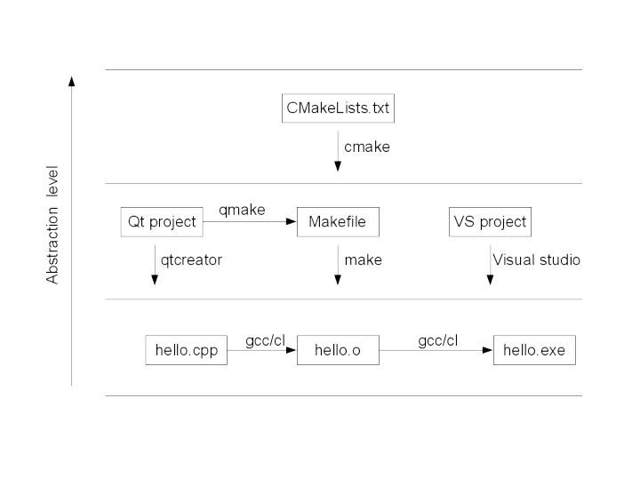

参考 ：https://www.zhihu.com/question/27455963
编译器（Compiler）
LLVM
在Windows下由于clang自己不带工具链，生成可执行文件的方法需要使用其他头文件，例如使用MingGW头文件
clang++ --target=i686-pc-mingw32 hello-world.cpp
clang和LLVM的关系：

GCC
简介
GCC是the GNU Compiler Collection，gcc命令会根据源文件后缀名选择编译器进行编译，g++是C++编译器。
g++使用和常见中间生成文件
#直接生成可执行文件
g++ hello.cpp -o hello
#预处理，生成预编译文件（是文本文件）
g++ –E hello.cpp –o hello.ii
#编译，生成汇编代码（是文本文件）
g++ –S hello.ii –o hello.s
#汇编，生成目标文件（是二进制文件）
g++ –c hello.s –o hello.o
#链接，生成可执行文件：
g++ hello.o –o hello
另外，.i为预处理过的C源代码文件。
上述语句中，-c、-E、-S只是指示要生成什么文件，g++会根据源文件扩展名决定怎么处理源文件，例如g++ –c hello.cpp –o hello.o这样也是可以的。clang++接口基本与g++一致。
目标文件
Linux下动态链接库是.o。（Windows下是.obj。）
Linux目标文件格式为ELF类型。
目标文件为二进制文件，但是其中插入了编译的时候引用到的符号（函数，全局变量等），这些内容为文本。
动态链接库（.so）和静态链接库（.a）
Linux下动态链接库是.so（指Shared Object File），静态链接库是.a（指Archive File）,两者都是由多个目标文件（.o）组成的（Windows下动态链接库是.dll，静态链接库是.lib。）
静态链接库在链接时把库文件的代码加入到可执行文件中，动态链接库在程序执行时加载库。
Linux下静态链接库命名为lib什么什么.a，动态链接库命名为lib什么什么.so。
# 生成目标文件func.o
clang++ -c func.cpp
# 生成目标文件func2.o
clang++ -c func2.cpp
# 添加或替换指定的文件到静态库
ar -r libfunc.a func.o func2.o
# 生成动态库
clang++ func.o func2.o -shared -fPIC -o libfunc.so
# 链接组建可执行文件main。添加-L.使得搜索库的路径包括当前目录。-ltest表示使用libfunc.so（优先）或者libfunc.a。
clang++ main.cpp -L. -lfunc -o main
# 或者
clang++ libfunc.a main.cpp -o main
如果使用动态库，编译生成的可执行文件是不能跑的。因为和Windows不同，Linux下搜索动态库的默认路径为/lib和/usr/lib。可以通过export LD_LIBRARY_PATH=./设置额外搜索路径。另外/etc/ld.so.conf中可以添加额外搜索路径（绝对路径）。
那么为什么平时使用标准库的时候不需要在链接时写入链接的静态库的名称呢？标准库的头文件里做什么手脚呢？（cl可以使用#pragma comment制定链接的库。）
构建工具
make
类unix环境下的项目管理工具，根据Makefile编译组建多个源文件。
项目管理工具

qmake
qmake是Qt专用的项目管理工具，对应的工程文件是*.pro，在Linux下面它也会生成Makefile。
cmake
cmake是跨平台项目管理工具，cmake命令执行CMakeLists.txt文件。Linux下它会生成Makefile、eclipse工程文件等，Win下会生成Visual Studio的工程文件。
# 将构建生成的文件放到build目录下，以和源码分离
mkdir build
cd build
#生成Makefile
cmake .. -G "MinGW Makefiles"
#构建
make